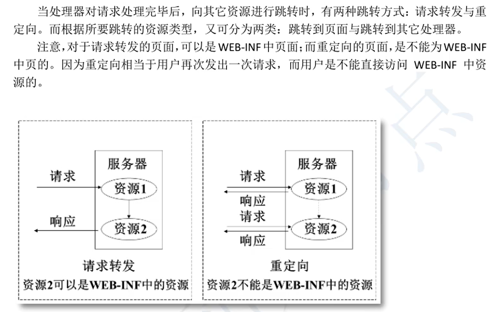

一、请求转发和重定向


ModelAndView mv=new ModelAndView();
以前SpringMVC跳转到 jsp
mv.setViewName("/show"); ，这种方式可以使用视图解析器
显示转发
语法：
mv.setViewName("forward:视图文件完整路径名");
特点：不能和视图解析器一同使用，就当项目没有视图解析器。必须使用完整路经名。
显示转发的应用场景：访问视图解析器之外的目录。
转发行为因为是在服务器内部的访问，故可以访问WEB-INF下的资源。
重定向redirect
语法：
mv.setViewName("redirect:视图文件完整路径名");
特点：1、不能和视图解析器一同使用，就当项目没有视图解析器。必须使用完整路经名。
2、不能使用访问WEB-INF下的资源。
框架对重定向的操作：框架会将第一次请求的request作用域中的简单数据作为第二次请求时的请求参数使用。
可以作为两次请求之间的数据通道使用，第二次请求可以读取浏览器访问时的参数。
${param.参数名}
二、异常处理

SpringMVC采用统一全局异常处理。
把所有controller中的所有异常处理都集中到一个地方。采用的是aop的思想。把业务逻辑和异常处理代码分离开。解耦和。
使用两个注解：
1、@ExceptionHandler
2、@ControllerAdvice


三、拦截器
可以看成是多个Controller中公用的功能，集中到拦截器统一处理，使用的是aop思想。


SpringMVC
4.3版本中，HandlerInterceptor接口的三个方法必须全部实现。
5.2.5版本中，该三个方法被default修饰，需要使用那个就实现哪个。
package com.handler;
import org.springframework.web.servlet.HandlerInterceptor;
import org.springframework.web.servlet.ModelAndView;
import javax.servlet.http.HttpServletRequest;
import javax.servlet.http.HttpServletResponse;
public class OneInterceptor implements HandlerInterceptor {
/*
preHandle叫做预处理方法
参数：
object handler：被拦截的控制器对象
返回值：boolean
true：表示请求通过了拦截器的拦截，可以执行处理器方法。
false：表示请求没有通过拦截器的验证，请求到达拦截器就截止了。controller对象没有被处理。
特点：
1、方法在控制器方法之前先执行，用户的请求首先到达此方法
2、在这个方法中可以获取请求的信息，验证请求是否符合要求。
例如；验证用户是否可以登录，验证用户权限是否可以访问某个URL
如果验证失败，可以截断请求，请求不能被处理。
如果验证成功，可以放行请求，此时控制器方法才能执行。
* */
@Override
public boolean preHandle(HttpServletRequest request, HttpServletResponse response, Object handler) throws Exception {
return false;
}
/*
postHandle:后处理方法，十分重要，是项目的入口和门户
参数：
Object handler:被拦截的处理器对象
ModelAndView modelAndView:处理器方法的返回值
特点：
1、在处理器方法执行之后执行
2、能够获取到处理方法的返回值ModelAndView，可以修改ModelAndView中的数据和视图，可以影响到最后的执行结果。
3、主要是可以对原来的执行结果做二次修正
**/
@Override
public void postHandle(HttpServletRequest request, HttpServletResponse response, Object handler, ModelAndView modelAndView) throws Exception {
}
/*
afterCompletion:最后执行的方法
参数：
Object handler:被拦截的处理器对象
Exception ex:程序中发生的异常
特点：
1、在请求处理完成后执行，框架中规定视图处理完成后，对视图执行了forward，就认为是请求处理完成
2、一般是做资源回收工作的，程序中创建了一些对象，在这里可以删除，把占用的内存回收
* */
@Override
public void afterCompletion(HttpServletRequest request, HttpServletResponse response, Object handler, Exception ex) throws Exception {
}
}
声明拦截器
<!--声明拦截器：拦截器可以有0个或者多个-->
<mvc:interceptors>
<!--声明第一个拦截器-->
<mvc:interceptor>
<!--指定被拦截的请求URL，
可以使用通配符**，表示任意的字符，文件或者多级目录和目录中的文件-->
<!-- <mvc:mapping path="/**"/>表示所有的请求都将被拦截-->
<mvc:mapping path="/student/**"/>
<!--声明拦截器对象-->
<bean class="com.handler.OneInterceptor"/>
</mvc:interceptor>
</mvc:interceptors>
多个拦截器
在框架中保存多个拦截器是ArrayList，按照声明的先后顺序放入到ArrayList，先声明的先进行拦截


拦截器和过滤器的区别

登录验证拦截器实现